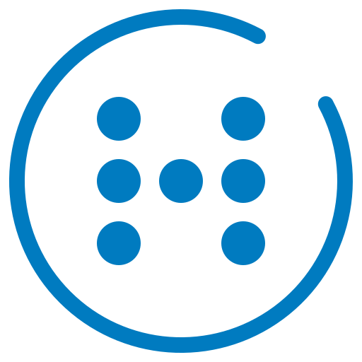

Prova UPCHub en tres papers
Dilluns a les 9:00, classe de Disseny Bàsic a l'aula 205. El projector no funciona i a l'aula fa calor. Tria un rol, fes la seva tasca i després digues-nos si s'entén.
-
Mòbil
Alumne
TascaComençar com a alumneL'endoll del teu lloc no funciona. Avisa-ho.
-
Ordinador o mòbil
Professor
TascaComençar com a professorInicia la sessió i esbrina quin equip falla.
-
Ordinador
Tècnic
TascaComençar com a tècnicQuè atendries primer? Resol-ho i revisa què ha passat avui.
Els tres rols comparteixen les dades: el que avisa l'alumne o el professor apareix a la cua del tècnic, i el que resol el tècnic arriba al mòbil de l'alumne. Pots obrir-los en pestanyes diferents.
Quan acabis, valora la demo
Tres preguntes, menys d'un minut i sense dades personals.
Proposta acadèmica de l'assignatura Disseny Bàsic · UPC · EPSEVG · Equip 02. No és un servei oficial de la universitat. Privacitat i dades
Cartera
Toca el carnet per girar-lo
La teva aula
Els teus avisos
Horari d'avui
Notificacions
Rebuda
El servei tècnic ja té el teu avís, amb l'aula i l'hora inclosos. Et notificarem quan canviï d'estat.
Aula 205
Toca el lector amb el carnet del mòbilApropa el mòbil al lector de la porta
A l'aula real n'hi ha prou d'apropar el mòbil al lector, sense contrasenyes.
Sessió a punt
Hola, Professor/a de prova. L'aula s'ha preparat sola.

Aula 205
Disseny Bàsic · 9:00–11:00 · 24 alumnesEquips · toca'n un per veure'l
Ambient
Avisos de l'alumnat
Dades d'exemple.
Provem-ho junts
He vist que el projector no rep senyal del dock. Prova aquests tres passos i marca'ls a mesura que els facis:
Funciona ara?
Avisem el tècnic
L'assistent ha omplert la fitxa amb el que ja sap de l'aula. Revisa-la i envia-la.
Avís enviat
Perfecte, ja funciona
Queda anotat a l'historial de l'aula perquè el servei tècnic en tingui constància.
On vols continuar la classe?
Aules de la planta i properes, segons l'horari real. Necessites lloc per a 24 alumnes fins a les 11:00.
Tria una aula per continuar.
Revisa l'avís per a l'alumnat
Arribarà com a notificació a l'app del campus de les 24 persones matriculades. El servei tècnic també ho veurà.
Alumnat avisat
Obre el rol d'alumne en una altra pestanya per veure com arriba la notificació.
Servei tècnic
Campus EPSEVG ·Cua d'incidències
Ordenada per prioritat: P = gravetat × urgència × impacte.
Resoltes avui
Incidència resolta
Historial d'avui
Tot el que ha passat i ha canviat a les aules des de les 7:30.
Valora la demo
Tres preguntes que ens ajuden a saber si UPCHub s'entén. Menys d'un minut, i no et demanem el nom, el correu ni cap dada personal.
Les teves tasques
Gràcies!
Privacitat i dades
Per millorar la demo registrem com s'utilitza: quines pantalles s'obren, quins botons es premen i quant es triga a fer cada tasca. Ho fem de manera anònima i només si ho acceptes.
Què es registra
- Un identificador aleatori de la sessió, que no et identifica.
- Les pantalles i els botons que fas servir, amb l'hora.
- El temps i els passos de cada tasca, l'idioma i si és mòbil o ordinador.
- Els comentaris i les respostes que decideixis enviar.
No es registra el que escrius als camps de text, excepte als comentaris i a l'enquesta quan els envies. No fem servir galetes ni analítica de tercers.